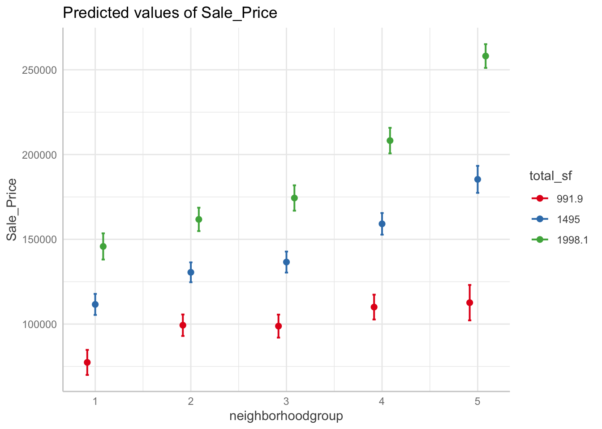

4.4 Interpreting Regression Equations
4.4.3 Confounding Variables (problem of ommision)
With our housing data, location may be a confounding (houses in some neighborhoods may sell at a higher price than other neighborhoods).
neighborhood_groups <- dat %>%
dplyr::mutate(resid = residuals(house_lm)) %>%
dplyr::group_by(Neighborhood) %>%
dplyr::summarize(med_resid = median(resid),
cnt = n()) %>%
dplyr::arrange(med_resid) %>%
dplyr::mutate(cum_cnt = cumsum(cnt),
neighborhoodgroup = forcats::as_factor(ntile(cum_cnt, 5)))
dat <- dat %>%
left_join(dplyr::select(neighborhood_groups, Neighborhood, neighborhoodgroup),
by = "Neighborhood")
lm(Sale_Price ~ total_sf + Lot_Area + Bedroom_AbvGr + bath + Central_Air +
neighborhoodgroup, data = dat) %>%
summary() %>%
broom::tidy()## # A tibble: 10 × 5
## term estimate std.error statistic p.value
## <chr> <dbl> <dbl> <dbl> <dbl>
## 1 (Intercept) -5644. 4131. -1.37 1.72e- 1
## 2 total_sf 86.7 2.26 38.4 3.83e-261
## 3 Lot_Area 0.453 0.0990 4.58 4.94e- 6
## 4 Bedroom_AbvGr -17093. 1074. -15.9 1.02e- 54
## 5 bath 17560. 1222. 14.4 2.71e- 45
## 6 Central_AirY 30157. 3071. 9.82 2.01e- 22
## 7 neighborhoodgroup2 17332. 2615. 6.63 4.05e- 11
## 8 neighborhoodgroup3 25081. 2546. 9.85 1.49e- 22
## 9 neighborhoodgroup4 46051. 2733. 16.8 7.29e- 61
## 10 neighborhoodgroup5 102744. 3289. 31.2 4.59e-1854.4.4 Main Effects and Interactions
interaction_fit <- lm(Sale_Price ~ Lot_Area + Bedroom_AbvGr + bath + Central_Air + neighborhoodgroup*total_sf, data = dat)
interaction_fit %>%
summary() %>%
broom::tidy()## # A tibble: 14 × 5
## term estimate std.error statistic p.value
## <chr> <dbl> <dbl> <dbl> <dbl>
## 1 (Intercept) 14634. 6503. 2.25 2.45e- 2
## 2 Lot_Area 0.497 0.0936 5.31 1.15e- 7
## 3 Bedroom_AbvGr -16855. 1028. -16.4 7.90e-58
## 4 bath 18578. 1158. 16.0 1.55e-55
## 5 Central_AirY 33268. 2937. 11.3 3.95e-29
## 6 neighborhoodgroup2 27831. 7329. 3.80 1.49e- 4
## 7 neighborhoodgroup3 14349. 7390. 1.94 5.23e- 2
## 8 neighborhoodgroup4 3273. 8054. 0.406 6.84e- 1
## 9 neighborhoodgroup5 -40739. 9717. -4.19 2.84e- 5
## 10 total_sf 68.0 4.38 15.5 2.85e-52
## 11 neighborhoodgroup2:total_sf -5.95 4.94 -1.20 2.29e- 1
## 12 neighborhoodgroup3:total_sf 7.12 5.17 1.38 1.69e- 1
## 13 neighborhoodgroup4:total_sf 29.6 5.48 5.40 7.25e- 8
## 14 neighborhoodgroup5:total_sf 76.6 5.49 13.9 7.29e-43If an interaction is significant, it means the association is different at different levels of a factor or different values of a continuous variable. You will need to visually determine how this differs in order to interpret these results.
interaction <- ggeffects::ggpredict(interaction_fit,
terms = c("neighborhoodgroup", "total_sf"))
plot(interaction)
Selecting interaction terms
Prior knowledge and intuition can guide choices
Stepwise regression can be used to sift through variables
Penalized regression can automatically fit to a large set of variables
The most common approach is to use tree models, as well as their descendants which automatically search for optimal interaction terms.